1008b10 power unit front mount (timing side) flexible block - replace
- Path
- Procedures > 10 ENGINE > 1008 POWER UNIT SUPPORTS > 1008B power unit mounting blocks > 1008b10 power unit front mount (timing side) flexible block - replace
- Kind
- repair procedure (removal / refitting; the operation number is the code)
- Applies to
- engines: 1.2 8v, 1.4 8v, 1.6 16v, 1.3 JTD 16V, 1.9 JTD 8V; all production periods
- Interactive page
- https://sloeber94.github.io/elrnDB-fDbl/en/#/2584159
Applies to: engines: 1.6 16v; all production periods
 Removing
Removing
 Refitting
RefittingPlace the car on the ramp.
Disconnect the battery negative terminal.
 | Name | Connector |
|---|---|---|
- | Battery |
1. Undo the fixing bolts (1a) and move the power assisted steering fluid reservoir (1b) aside.
2. Undo the bolts (2a) and move the engine coolant expansion tank (2b) away from the work area.
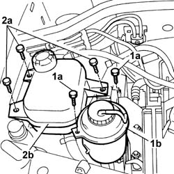
Applies to: engines: 1.6 16v; all production periods
1. Position the crossmember (1a) complete with support mountings (1b) as illustrated in the diagram.
2. Attach the crossmember rod (2a) to the bracket (2b) on the power assisted steering pump support.
3. Adjust the handwheel and tension the engine slightly.
 | Name | Country |
|---|---|---|
1a | Crossmember | 1.870.595.000 |
| Name | Country |
|---|---|---|
1b | Support mountings | 1.870.650.000 |
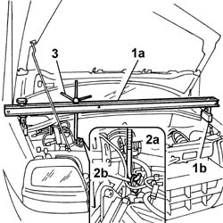
Applies to: engines: 1.6 16v; all production periods
1. Undo the fixing nuts (1a) on the rigid support and the nuts (1b) fixing the flexible mounting to the bodyshell.
2. Undo the fixing bolt on the flexible mounting reinforcement bracket.
3. Remove the flexible mounting (3a) complete with engine support (3b).
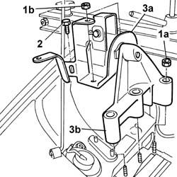
Applies to: engines: 1.6 16v; all production periods
Refitting
RemovingPosition the flexible mounting complete with support in the engine compartment.
Tighten the nuts fixing the flexible mounting to the bodyshell.
 | Fastening | Component | Ø | Value (daNm) |
|---|---|---|---|---|
- | Nut | FRONT RUBBER MOUNTS | M10 x 1.25 | (Engine side) 4,5 |
Tighten the nuts fixing the support to the studs.
| Fastening | Component | Ø | Value (daNm) |
|---|---|---|---|---|
- | Nut | FRONT RUBBER MOUNTS | M12 x 1.25 | (Engine side) 5 |
Tighten the bolt on the reinforcement bracket fixing the flexible mounting to the bodyshell.
Remove the crossmember complete with support mountings positioned previously for supporting the enigne.
| Name | Country |
|---|---|---|
- | Crossmember | 1.870.595.000 |
| Name | Country |
|---|---|---|
- | Support mountings | 1.870.650.000 |
Place the engine coolant expansion tank back in its original position and tighten the fixing bolts.
Place the power assisted steering fluid reservoir back in its original position and tighten the fixing bolts.
Connect the battery negative terminal.
| Name | Connector |
|---|---|---|
- | Battery |
Remove the car from the ramps.
Applies to: engines: 1.3 JTD 16V; all production periods
Removing
RefittingDisconnect the battery negative terminal.
| Name | Connector |
|---|---|---|
- | Battery |
1. Disconnect the electrical connection from the air flow meter.
| Name | Connector |
|---|---|---|
1 | Air flow meter |
2. Loosen the band and disconnect the the turbocharger air inlet sleeve from the rigid pipe, air flow meter side.
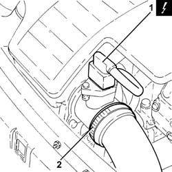
Applies to: engines: 1.3 JTD 16V; all production periods
1. Loosen the band (1a) and disconnect the hose (1b) from the air intake.
2. Remove the air filter (2a) complete with air flow meter (2b) by releasing from the underlying pins and then from the rear fastenings.
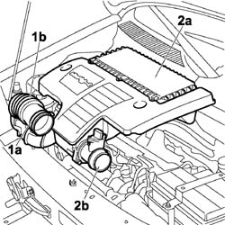
Applies to: engines: 1.3 JTD 16V; all production periods
Undo the fuel filler cap and remove it to discharge the pressure in the system.
1. Disconnect the electrical connection from the fuel pre-heating device.
Name | Connector | |
|---|---|---|
1 | Fuel temperature sensor |
2. Working on the rapid connectors (2a) and (2b), disconnect the fuel return pipe. Seal the ends.
3. Working on the rapid connector, disconnect the fuel supply pipe. Seal the ends.
4. Using the special tool, loosen the band (4a) and disconnect the engine coolant return pipe (4b). Seal the ends.
| Name | Country |
|---|---|---|
4a | Pliers | 1.881.138.000 |
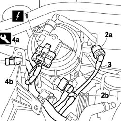
Applies to: engines: 1.3 JTD 16V; all production periods
1. Release the engine coolant return pipe (1c) from the securing clips (1a) and (1b).
2. Release the wiring (2c) from the securing clips (2a) and (2b).
3. Release the fuel supply and return pipes (3a) from the securing clip (3b).
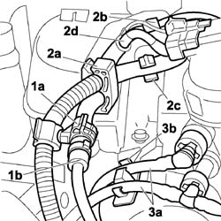
Applies to: engines: 1.3 JTD 16V; all production periods
1. Working on the rapid connector (1a) disconnect and release the fuel supply pipe from the securing clip (1b). Seal the ends.
2. Working on the rapid connector (2a), disconnect and release the fuel return pipe from the securing clip (2b). Seal the ends.
3. Working on the rapid connector (3a) disconnect and release the engine coolant return pipe from the securing clip (3b). Seal the ends.
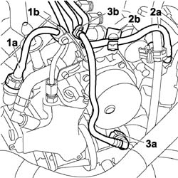
Applies to: engines: 1.3 JTD 16V; all production periods
1. Undo the fixing bolts (1a) and remove the pipe retaining duct (1b) from the engine.
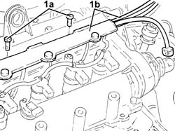
Applies to: engines: 1.3 JTD 16V; all production periods
1. Undo the fixing bolts (1a) and move the power assisted steering fluid reservoir (1b) aside.
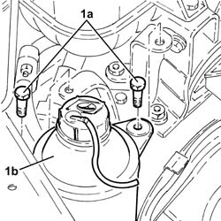
Applies to: engines: 1.3 JTD 16V; all production periods
Op. 1044B10 FUEL FILTER ASSEMBLY - R + R OR REPLACE
Carry out
1. Using a suitable size plug (1a) to ensure the seal, seal the end of the engine coolant reservoir (1b).
2. Undo the fixing bolt (2a) and remove the mounting bracket (2b).
3. Undo the bolts (3a) and move the expansion tank (3b) away from the work area without disconnecting it from the pump supply pipe.
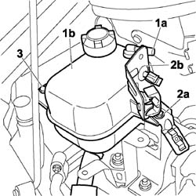
Applies to: engines: 1.3 JTD 16V; all production periods
Position a hydraulic jack underneath the engine by the timing side support and carefully raise the power unit to discharge the weight from the flexible mounting.
1. Undo the fixing blt (1a) and loosen the bolt (1b) and remove the power assisted steering fluid reservoir support (1c).
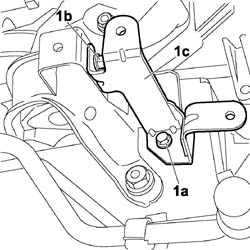
Applies to: engines: 1.3 JTD 16V; all production periods
1. Undo the nuts (1a) fixing the flexible mounting support and remove the wiring mounting bracket (1b).
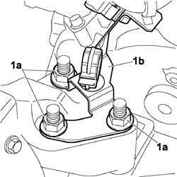
Applies to: engines: 1.3 JTD 16V; all production periods
1. Undo the fixing nuts (1a) on the bodyshell and remove the power unit front support flexible mounting (1b).
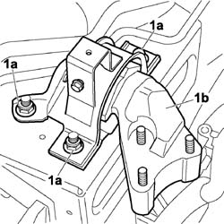
Applies to: engines: 1.3 JTD 16V; all production periods
Refitting
RemovingPlace the flexible mounting assembly (1a) in position in the engine compartment.
Tighten the nuts (1b) fixing the flexible mounting to the bodyshell.
| Fastening | Component | Ø | Value (daNm) |
|---|---|---|---|---|
1a | Nut | FRONT RUBBER MOUNTS | M10 x 1.25 | (Bodyshell side) 4.5 ¸ 5 |
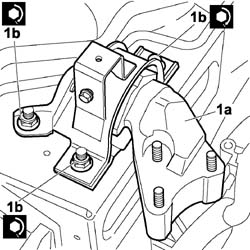
Applies to: engines: 1.3 JTD 16V; all production periods
1. Positionthe wiring mounting bracket (1a) and tighten the nuts (1b) fixing the flexible mounting support to the studs to the recommended torque.
| Fastening | Component | Ø | Value (daNm) |
|---|---|---|---|---|
1b | Nut | FRONT RUBBER MOUNTS | M12 x 1.25 | (Engine side) 4.5 ¸ 5.5 |
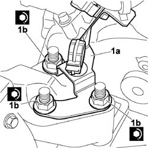
Applies to: engines: 1.3 JTD 16V; all production periods
Remove the hydraulic jack from underneath the engine.
Place the power assisted steering fluid reservoir support in position and tighten the fixing bolts to the recommended torque.
| Fastening | Component | Ø | Value (daNm) |
|---|---|---|---|---|
- | Bolt | POWER STEERING FLUID RESERVOIR | M6 | 0.85 |
Place the engine coolant expansion tank in position.
Place the wiring and pipe mounting bracket in position then screw in the fixing bolt without tightening it.
Screw in the remaining two bolts and then tighten all three tank fixing bolts.
Carry out -
Op. 1044B10 FUEL FILTER ASSEMBLY - R + R OR REPLACE
Place the power assisted steering fluid reservoir in position and tighten the fixing bolts.
Remove the sealing plug from the ends and, working on the rapid connector, connect the fuel supply pipe.
Remove the sealing plug from the ends and, working on the rapid connector, connect the fuel return pipe.
Remove the sealing plug from the ends and, working on the rapid connector, connect the engine coolant return pipe.
Place the pipe retaining duct in position and tighten the fixing bolts.
Remove the sealing plug from the end of the engine coolant reservoir.
Connect the engine coolant return pipe to the engine coolant expansion tank and tighten the securing band.
| Name | Country |
|---|---|---|
- | Pliers | 1.881.138.000 |
Remove the sealing plugs from the ends and, working on the rapid connectors, connect the fuel return pipe.
Remove the sealing plugs from the ends and, working on the rapid connectors, connect the fuel supply pipe.
Connect the electrical connection to the fuel pre-heating device.
| Name | Connector |
|---|---|---|
1 | Fuel temperature sensor |
Fasten the fuel supply and return pipes to the securing clips.
Fasten the engine coolant return pipe and the wiring to the securing clips.
Refit and tighten the fuel filler cap.
Place the air filter complete with air flow meter in position, attaching it to the rear fastening and then to the pins underneath.
Connect the hose to the air intake on the crossmember and tighten the securing band.
Connect the turbocharger air intake hose, air flow meter side and tighten the securing band.
Connect the electrical connection to the air flow meter.
| Name | Connector |
|---|---|---|
- | Air flow meter |
Connect the battery negative terminal.
| Name | Connector |
|---|---|---|
- | Battery |
Applies to: engines: 1.9 JTD 8V; all production periods
Removing
Refitting1. Undo the bolts (1a) and move the power assisted steering fluid reservoir (1b) aside.
Applies to: engines: 1.9 JTD 8V; all production periods
1. Undo the bolts (1a) and remove the power steering fluid reservoir mounting bracket (1b).
2. Loosen the band and disconnect the coolant return pipe from the engine coolant reservoir.
Drain the engine coolant reservoir using a suitable syringe.
3. Undo bolts securing the engine cooling reservoir.
4. Loosen the band and disconnect the supply pipe from the engine coolant reservoir.
5. Remove the engine coolant reservoir.
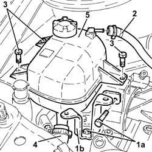
Applies to: engines: 1.9 JTD 8V; all production periods
1. Tighten the nut securing timing side rigid engine support to the flexible mounting to the recommended torque.
2. Loosen the nuts fixing the timing side power unit flexible mounting to the bodyshell.
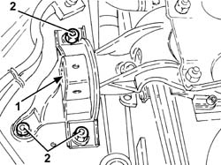
Applies to: engines: 1.9 JTD 8V; all production periods
Position a hydraulic lift under the power unit.
1. Completely undo the nuts (1a) and the bolt (1b) loosened previously and remove the flexible mounting for the power unit timing side front support (1c).
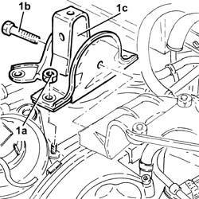
Applies to: engines: 1.9 JTD 8V; all production periods
Refitting
RemovingPlace the power unit timing side front support flexible mounting in its housing and secure it without tightening the nuts and the bolt.
Remove the hydraulic lift from underneath the power unit.
1. Tighten the bolt fixing the power unit timing side flexible mounting to the rigid support.
| Fastening | Component | Ø | Value (daNm) |
|---|---|---|---|---|
1 | - | - | - | - |
2. Tighten the nuts fixing the power unit timing side flexible mounting to the bodyshell.
| Fastening | Component | Ø | Value (daNm) |
|---|---|---|---|---|
2 | Nut | ENGINE MOUNT TIMING SIDE | M10 | (Bodyshell side) 4.0 ÷ 5.0 |
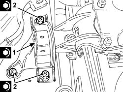
Applies to: engines: 1.9 JTD 8V; all production periods
Place the engine coolant reservoir back in its housing.
Connect the engine coolant reservoir supply pipe and tighten the band.
Tighten the engine coolant reservoir fixing bolts.
Connect the coolant return pipe to the engine coolant reservoir and tighten the band.
Place the power assisted steering reservoir mounting bracket back in its housing and tighten the bolts.
Refit in its seating the power steering fluid reservoir and secure it with its bolts.
Refill the engine cooling system with coolant
Applies to: engines: 1.2 8v; all production periods
Removing
RefittingPlace the car on a ramp.
Op. 7055B54 PROTECTION/GUARD UNDER ENGINE - R.R.
1. Undo the bolt securing the coolant reservoir to the flexible block.
2. Undo the bolts securing the power steering pump reservoir bracket to the block.
3. Undo nuts (3a) securing flexible block to the engine mount and body and then remove block (3b).
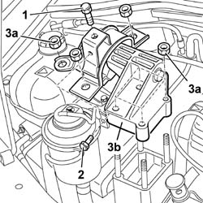
Applies to: engines: 1.2 8v; all production periods
Refitting
RemovingFit front mount flexible block and tighten nuts to the specified torque.
| Fastening | Component | Ø | Value (daNm) |
|---|---|---|---|---|
- | Nut | FRONT RUBBER MOUNTS | M10 x 1.25 | (Rigid support side) 5 |
| Fastening | Component | Ø | Value (daNm) |
|---|---|---|---|---|
- | Nut | FRONT RUBBER MOUNTS | M10 x 1.25 | (Bodyshell side) 4.3 |
Tighten the bolts securing the power steering pump reservoir bracket to the block
Tighten the bolt securing the coolant reservoir to the flexible block.
Remove the lift from beneath the engine.
Op. 7055B54 PROTECTION/GUARD UNDER ENGINE - R.R.
Remove the vehicle from the ramp.
Applies to: engines: 1.4 8v; production: da 12/03; only with equipment: MY 2005
Removing
RefittingOp. 7055B54 PROTECTION/GUARD UNDER ENGINE - R.R.
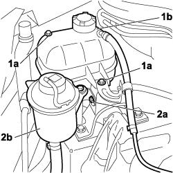
Applies to: engines: 1.4 8v; production: da 12/03; only with equipment: MY 2005
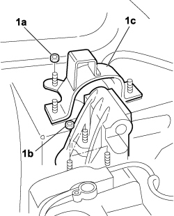
Applies to: engines: 1.4 8v; production: da 12/03; only with equipment: MY 2005
Refitting
Removing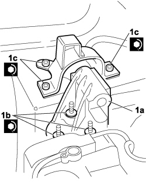
Applies to: engines: 1.4 8v; production: da 12/03; only with equipment: MY 2005
Topics linked from this page (6)
- 0010T20 coolant change
- 1044B10 fuel filter assembly - r + r or replace
- 7055B54 under-engine guard - r r
- A001 BATTERY
- K041 AIR FLOW METER
- K081 FUEL TEMPERATURE SENSOR
Topics that link to this page (28)
- 0510A20 timing gear with belt drive - check - carry out operation with cam cover(s) removed and tappets adjusted
- 0510A30 cam lift - check with cam cover(s) removed
- 1004B10 POWER UNIT WITH MANUAL GEARBOX - R.R
- 1008a46 cam shaft left rigid mount - r r
- 1008a46 TIMING SIDE POWER UNIT RIGID SUPPORT - R.R.
- 1016B10 single cylinder head extension - change gasket
- 1016B20 lh cylinder head extension - replace gasket
- 1016B24 rh cylinder head extension - replace gasket
- 1016C10 cylinder head - r + r and replace gasket
- 1020B10 cover of timing system with chain drive - r + r replace oil seal and gasket
- 1020D12 front crank shaft oil seal cover - r + r and replace seals
- 1020D14 front crank shaft oil seal cover - r + r and replace seals for versions with oil pump on crank shaft, timing side
- 1020D18 front crank shaft cover oil seal - replace
- 1032B10 toothed timing belt - r + r for timing adjustment or replacement
- 1032B14 toothed timing belt - r + r for timing adjustment or replacement versions with air conditioner
- 1032B46 toothed drive pulley - r + r
- 1032B52 toothed driven pulley (one) - r + r
- 1032B60 bolt pulley - r r
- 1032B62 TIMING BELT TOOTHED PULLEY - R.R. FOR VERSIONS WITH AIR CONDITIONING
- 1032C18 mobile timing system tensioner - r + r for 24 valve engines
- 1032D12 timing system protective cover(s) - r + r
- 1032D34 timing system guard assemblies - r + r
- 1036B10 overhead camshaft - r r on vehicle
- 1036G10 camshaft controlling exhaust valves in top head - r + r with top head removed - includes replacement of top head
- 1036G20 camshaft controlling intake valves in top head - r + r with top head removed - includes replacement of top head if necessary
- 1036C39 PHASE TRANSFORMER ON INLET CAMSHAFT IN CYLINDER HEAD - R.R.
- 1088C10 water pump - r + r
- 3330D15 BRAKE SERVO - R.R. FOR RIGHT HAND DRIVE VERSIONS AND AIR CONDITIONING - INCLUDES. SEPARATING MASTER CYLINDER